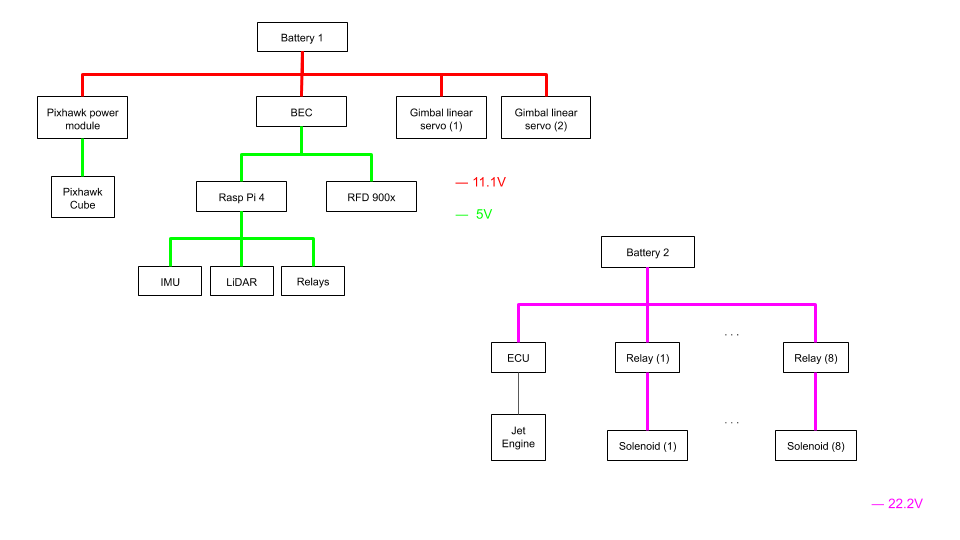
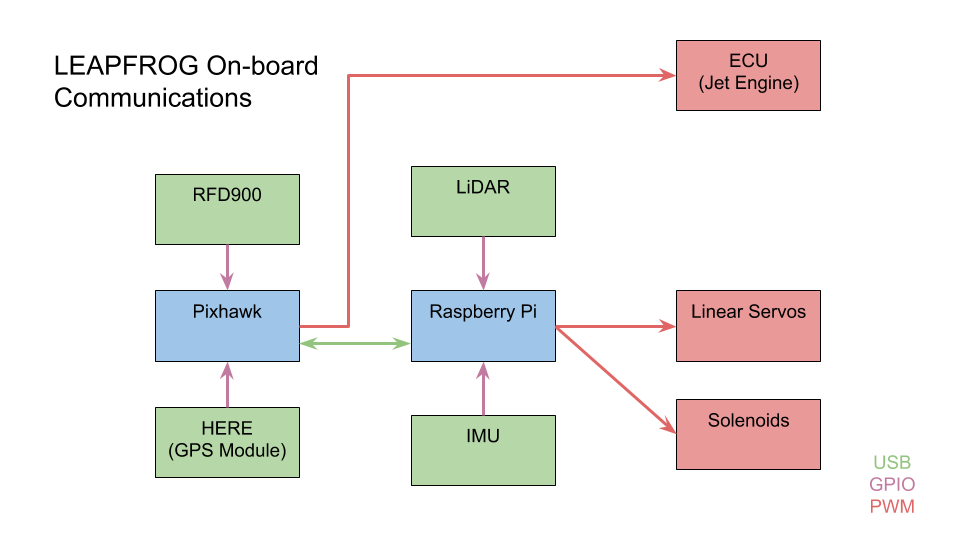

The Artemis Student Challenge is an interscholastic project that aims to develop a competition for collegiate students. The competition is themed with a lunar lander, as it relates to the Artemis effort that NASA has instated. Thus, in the project we use the design for the lunar lander LEAPFROG that members of the University of Southern Califronia team had developed.

As a member of the UC, San Diego team, I worked on various aspects of the simulation challenge due to my prior experience of working with PX4-like software. Given that PX4 does not provide any controllers for lunar landers, we worked on implementing the appropriate control system for our gimballed jet engine. Also, as the simulation runs on externally on an instance of Gazebo, the physics engine, we had to develop some compatibility plugins to ensure that our simulation model closely approximates our physical model.
As the only member with a formal training in electrical engineering and from my prior experience in power electronics, I developed the onboard power configuration of the lander. This task mostly consisted on finding the optimal battery configuration power and weight distribution, as we decided to use off-the-shelf converters for time convenience and reliability.
Along with some members from the USC team, we work on the data flow for the onboard communications of the vehicle. Particularly, how the different devices will communicate with each other to passthrough telemetry data to the appropriate destination in a timely manner. For this, we came out with a plan for mitigating the limitation of the onboard RF modem using time division multiplexing, in addition to general multiplexing.